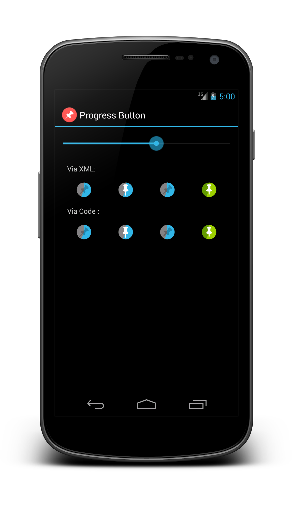

ProgressButton is a custom progress indicator with a tiny footprint. The default implementation provides a pin progress button as seen on the Android design site.
ProgressButton is highly customizable, you can supply your own resoures and progress values.
Simply define it in your your xml as:
</com.f2prateek.progressbutton.ProgressButton
android:layout_width="wrap_content"
android:layout_height="wrap_content"/>
Optionally, you could manually create the view from your Context as :
ProgressButton button = new ProgressButton(context)<
ProgressButton is a subclass of CompundButton, so you can use any of it's methods and style attributes as well.
Custom attributes defined for ProgressButton
progressmaxcircleColorprogressColorpinnedDrawableunpinnedDrawableshadowDrawableinnerSizepinnedCheck out the sample app on Google Play for an example. The source is available in the samples folder of the repository.
Due the the theming capabilities of the library, it must be referenced as a library project.
The library is also available through maven.
<dependencies>
<dependency>
<groupId>com.f2prateek</groupId>
<artifactId>progressbutton</artifactId>
<version>${progressbutton.version}</version>
<type>apklib</type>
</dependency>
</dependencies>
Copyright 2013 Prateek Srivastava Copyright 2012 Roman Nurik Licensed under the Apache License, Version 2.0 (the "License"); you may not use this file except in compliance with the License. You may obtain a copy of the License at http://www.apache.org/licenses/LICENSE-2.0 Unless required by applicable law or agreed to in writing, software distributed under the License is distributed on an "AS IS" BASIS, WITHOUT WARRANTIES OR CONDITIONS OF ANY KIND, either express or implied. See the License for the specific language governing permissions and limitations under the License.